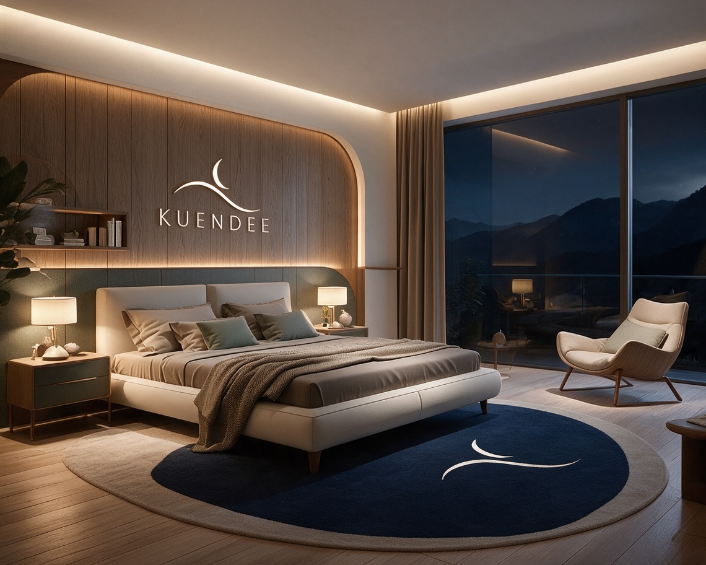

KUENDEESleep Lab
The Overthinker · หัวยังไม่หยุด
ห้องนี้ออกแบบมาเพื่อคุณ

ปรับห้อง
เริ่มค่ำคืนแล้วแอปจะฟังเสียงกรนทั้งคืน เสียบชาร์จมือถือไว้ด้วย
เช้านี้ร่างกายคุณได้พักเต็มที่
คืนวันเสาร์ที่ 7 พ.ย. · ห้อง 03 · 23:00–07:00
92Sleep score
ชีพจรขณะพัก56bpm
การหายใจ14ครั้ง/นาที
ขยับตัว8ครั้ง
ห้องดูแลคุณอย่างไรเมื่อคืน
ปรับเอง 7 ครั้งช่วงการนอน
23:00–07:00เสียงกรน
ข้อมูลตัวอย่างหลับลึกดีที่สุดตอนห้อง 24°C
หลับลึก 60 จาก 81 นาทีเกิดก่อน 02:00 ที่บ้านตั้งแอร์ 24°C แล้วให้ขึ้นเองช่วงดึก
เสียงรถตอน 03:40 ทำให้ตื่น 9 นาที
ห้องเพิ่ม Brown noise เป็น 48 dB(A) แล้วคุณหลับต่อได้ ที่บ้านเปิด Brown noise 45 dB(A) ทั้งคืน
ตื่นตอนหลับตื้น จึงไม่งัวเงีย
แสงอรุณเริ่ม 06:30 และพาคุณตื่นเองตอน 06:52 ก่อนนาฬิกาปลุก
ผลนี้ใช้ดูแลสุขภาวะการนอน ไม่ใช่การวินิจฉัยทางการแพทย์ ถ้านอนกรนหนักหรือมีช่วงหยุดหายใจ ควรพบแพทย์
พาค่ำคืนที่ดีกลับบ้าน
วัดผลMeasure
ออกแบบDesign
ทบทวนวันนี้ 09:30
ปรับใหม่คืนถัดไป
Light · Sound · Scent · Temp · Bed
5 อย่างที่ช่วยให้คุณหลับดี
คืนนี้ที่บ้าน
Sleep Kit ที่เข้ากับคุณ
ค่าเดียวกับห้องเมื่อคืนND
ทบทวนกับ Night Designer
วันนี้ 09:30 ที่ Consult Room ดูผลคืนนี้ด้วยกัน แล้วปรับแผนสำหรับคืนถัดไป
ต้นแบบแอป KUENDEE Sleep Lab · ข้อมูลการนอนในแอปนี้เป็นตัวอย่าง
ค่าห้องที่เหมาะกับแต่ละคน
บันทึกจากคืนที่นอนในห้อง Sleep Lab ทีม Night Designer ใช้ตั้งห้องให้ในคืนถัดไป แตะ "ใช้ค่านี้ตั้งห้อง" เพื่อเรียกค่ากลับมา